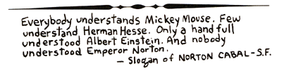

|
The Classification of Saints
1. SAINT SECOND CLASS
To be reserved for all human beings deserving of Sainthood. Example: St. Norton the First, Emperor of the United States and Protector of Mexico (his grave near San Francisco is an official POEE shrine.)
THE FOLLOWING FOUR CATAGORIES ARE RESERVED FOR FICTIONAL BEINGS WHO, NOT BEING ACTUAL, ARE MORE CAPABLE OF PERFECTION.
2. LANCE SAINT
Good Saint material and definitely inspiring. Example: St. Yossarian (Catch 22, Heller)
3. LIEUTENANT SAINT
Excellent Goddess-Saturated Saint. Example: St. Quixote (Don Quixote, Cervantes)
4. BRIGADIER SAINT
Comparable to Lt/Saint but has an established following (fictional or factual). Example: St. Bokonon (Cat's Cradle, Vonnegut)
FIVE STAR SAINT
5. The Five Apostles of Eris.
Note: It is an Old Erisian Tradition to never agree with each other about Saints.

|